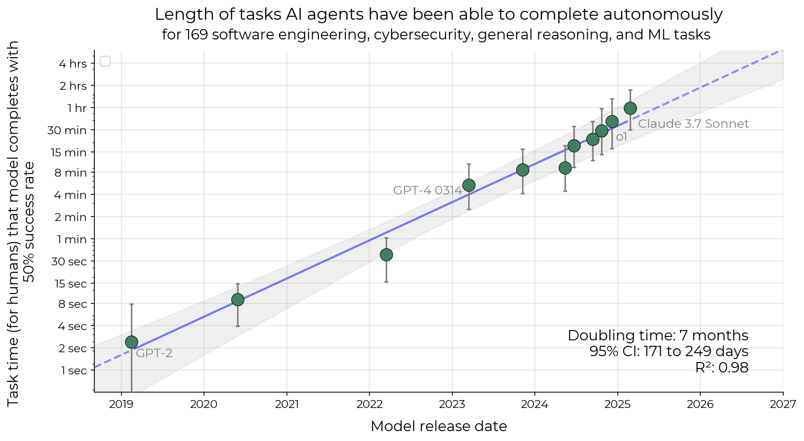

Claude 3.7 Sonnet's 59-minute time horizon is where its success crosses one half
METR built the number from 170 timed software tasks, and its seven-month doubling, drawn past the last released model, became a public calendar for automating a month of work.
Why this matters
You have probably met the claim that AI agents can now handle tasks that take a person an hour, and that the length is doubling every few months. Both come from one measurement: METR's task time horizon, and a trend line drawn through it. The number is real and carefully built. The trouble starts when it travels, because a mark set at 50% success reads like a claim about what a model can do. This lesson builds the number from its parts: the timed human tasks, the pass-or-fail score, and the curve fitted through them. Then it follows it to the point where a seven-month doubling became a public timetable for automating a month of work. You will come away able to read a horizon figure for what it measures, and to spot where someone asks it to predict a date it never reached.
- 01
- METR, Measuring AI Ability to Complete Long Tasks: the result announced and framed by the team that built it.
- 02
- Kwa et al., the full paper: the task suites, the fit, and the limits the authors state themselves.
A task length, read at half success
METR, a research group that evaluates AI systems, gives Claude 3.7 Sonnet a 59-minute task time horizon.1 The number is not a duration the model runs for, and not a task it can be trusted to finish. It is a length of task, measured by timing skilled people on the same work, at which the model succeeds half the time. On a set of software, machine-learning, and cybersecurity tasks, the ones a person needs about 59 minutes to do are the ones it gets right on roughly one attempt in two. The condition carries as much weight as the figure. Move to shorter tasks and its success rate climbs above half; move to longer ones and it falls below. Fifty-nine minutes is the crossover, the task length where success passes through 50%.
This is where the number is easy to misread. A 59-minute horizon sounds like a promise that the model can do an hour of a person's work. It reports something narrower: the point where a curve fitted to many pass-or-fail results crosses one half. METR's own write-up rounds the figure to "approximately one hour,"2 and the paper's abstract to "around 50 minutes," while the fitted value sitting between them is 59.1 To see why it is a crossover and not a capability, watch it get built.
Timing the tasks, then fitting a curve
Every horizon needs two facts per task: the human time, and whether the model finished. METR assembled 170 tasks spanning a few seconds to about thirty hours of human work. Sixty-six are very short software actions, 97 are longer software and research-engineering tasks, and 7 are machine-learning research problems.1 Skilled professionals, most with about five years in the field, were timed doing them, and a task's "length" is the geometric mean of the times of those who succeeded.
Each model then attempts each task, and every attempt is scored one way or the other: it meets the task's success condition or it does not, with no partial credit.1 Line the tasks up from shortest to longest, mark each attempt as passed or failed, and a shape appears. On the short tasks almost everything passes. On the long tasks almost everything fails. In between, the fraction that pass slides from near one down toward zero. A logistic curve, an S-shaped fit that starts high, drops through the middle, and flattens low, is drawn through that slide, with success plotted against the logarithm of human task time.
- p_{\text{success}}the fitted chance the model finishes a task.
- hthe model's time horizon, the length read off at 50%.
- tthe task's human time, the geometric mean above.
- \betathe slope, how sharply success falls as tasks get longer.
The horizon is the human task length where that fitted curve passes through 0.5, and the equation says why the two meet there. When a task's human time t equals the horizon h, the difference of their logarithms is zero, the whole expression inside collapses to zero, and the sigmoid of zero is exactly one half. The horizon is the definition made mechanical: the task length at which the fit predicts a coin toss.
Raise the bar to eighty percent and the hour is gone
Nothing forces the threshold to be one half. Read the same curve where it crosses 0.8 instead and you get the task length the model finishes four times in five. For Claude 3.7 Sonnet that length is not 59 minutes but about 15.1 The two figures describe the same model on the same tasks. They differ only in how often you insist it succeed, and lifting the bar from half the time to most of the time shrinks the horizon by roughly a factor of four.
So take a task that sits exactly at the 59-minute mark. It is not a task Claude 3.7 Sonnet can do. It is a task Claude 3.7 Sonnet finishes about half the times it tries. The threshold marks where success is even, not where it is safe.
Toby Ord, a philosopher at Oxford, worked out how these thresholds relate under one assumption: that an agent fails at a roughly constant rate for every minute a human would spend on a task. Under that model the 80% horizon sits at about a third of the 50% horizon, and the 99% horizon at about one-seventieth of it.3 The exact ratios depend on the assumption holding, and it does not hold exactly. Either way, the more reliably you need the work done, the shorter the tasks the number covers.
Seven months to a doubling, and the line past the data
One horizon is a snapshot of one model. The claim that reached the headlines is about the trend. Take the 50% horizon of the best model available at each date from 2019 to 2025, and the points climb a straight line on a logarithmic axis. Straight on a log scale means steady multiplication: the horizon roughly doubles every 212 days, with a bootstrap confidence interval of 171 to 249 days.1

Up to the last released model, this is a measurement: each point is a horizon fitted from real timings and real pass-or-fail results. Draw the line past that last point and it becomes an extrapolation, an assumption that whatever produced the doubling keeps producing it. The authors are careful about the seam. They write that future trend changes and external validity, not the fitting, are "responsible for the majority of our uncertainty."2
There is a further wrinkle inside the measured stretch. The full six-year trend doubles every seven months, but the most recent years look faster, nearer four to six months across 2023 to 2025. The authors call that speed-up "difficult to distinguish from noise."1 METR's own 2026 revision, built on a larger task set, moved the recent doubling toward 131 days, attributing part of the change to a shift in task difficulty rather than to capability alone.4 The settled fact is the seven-month doubling over the whole period. The acceleration is not settled, including by the group that first reported it.
How the trend became a new Moore's Law
Extend a straight line on a log chart and it will reach any milestone you name, on a date. AI Digest, a project that explains AI progress to the public, took the doubling and turned it into a calendar under the banner "A new Moore's Law for AI agents."5
| Horizon | In work terms | Projected year |
|---|---|---|
| 8 h | one work day | 2027 |
| 40 h | one work week | 2028 |
| 167 h | one work month | 2029 |
The move is tempting because Moore's law has this shape, a straight line on a log axis that held for decades. The metric underneath was not built to bear it, in two ways its own makers flagged. The first is scope. After the paper's first version, its title changed from "Measuring AI Ability to Complete Long Tasks" to "Long Software Tasks."1 The tasks are software, machine-learning, and cybersecurity work that comes with an automatic way to check the answer, not the open-ended judgment most jobs ask for. Run the same method on visual computer-use tasks and the horizons come out 40 to 100 times shorter; run it on Tesla's self-driving data and the doubling slows to well under one per year.6 The number is a property of a task distribution, and the software one is unusually friendly to it.
The second is that the calendar did not begin with AI Digest. The paper itself projects that "within 5 years" agents may automate software tasks that currently take humans a month.1 That is the same leap, made first by the authors and dated downstream. And a month-long horizon read at 50% would still describe a model that fails half of its month-long tasks. Ord's reframing sharpens the gap: if the per-minute failure rate is roughly constant, the reliable horizon trails far behind the 50% one, so the milestone for real work lands well after the headline date. That picture is itself unsettled. Ord notes it does not fit his human baseliners, who stayed above 20% success on twelve-hour tasks where a constant failure rate predicts about 6%.7 The intuition survives even if the exact mechanism does not: a 50% mark is a loose upper bound on dependable work, not a measure of it.
There is also the question of who grades the work. METR's tasks arrive with an automatic check; real software work does not. An independent review by A. Jesse Jiryu Davis notes that the testing was lopsided: METR capped its human timers at eight hours but gave the models no limit. Davis also points to METR's own finding that about half of the AI-written pull requests passing automated tests would be rejected by a human maintainer.8 A number built where the referee is a script says less about work where the referee is a person. None of this makes the 59-minute figure wrong. It makes it narrow. The figure reports the software task length at which one model succeeded half the time in early 2025. It says nothing on its own about a date, a job, or a level of reliability anyone would ship.
The takeaway
A task time horizon is a crossover, not a capability. It is the length of task, timed on skilled people, at which a model's fitted success curve passes through one half. For Claude 3.7 Sonnet on METR's software tasks that length is 59 minutes, and about 15 minutes if you ask it to succeed four times in five instead. The seven-month doubling of that crossover, measured across six years, is a real and careful result. The calendar of automated work-months laid on top of it is not part of the measurement. It is a straight line extended past the last real point, on a metric its own authors scoped to software and warned carries most of its uncertainty there. When the next horizon figure arrives fastened to a year, you now know which half was measured and which half was drawn in.
- 01
- Toby Ord, Is there a Half-Life for the Success Rates of AI Agents?: reworks the same data as a constant failure rate per minute and asks what that implies for longer tasks.
- 02
- METR, How Does Time Horizon Vary Across Domains?: the same method on other task suites, where the horizon lands 40 to 100 times apart.
Sources
- arXiv · Kwa et al., Measuring AI Ability to Complete Long Software Tasks
- METR · Measuring AI Ability to Complete Long Tasks
- arXiv · Toby Ord, Is there a half-life for the success rates of AI agents?
- METR · Time Horizon 1.1
- AI Digest · A new Moore's Law for AI agents
- METR · How Does Time Horizon Vary Across Domains?
- Toby Ord · Is there a Half-Life for the Success Rates of AI Agents?
- A. Jesse Jiryu Davis · Review: Measuring AI Ability to Complete Long Software Tasks